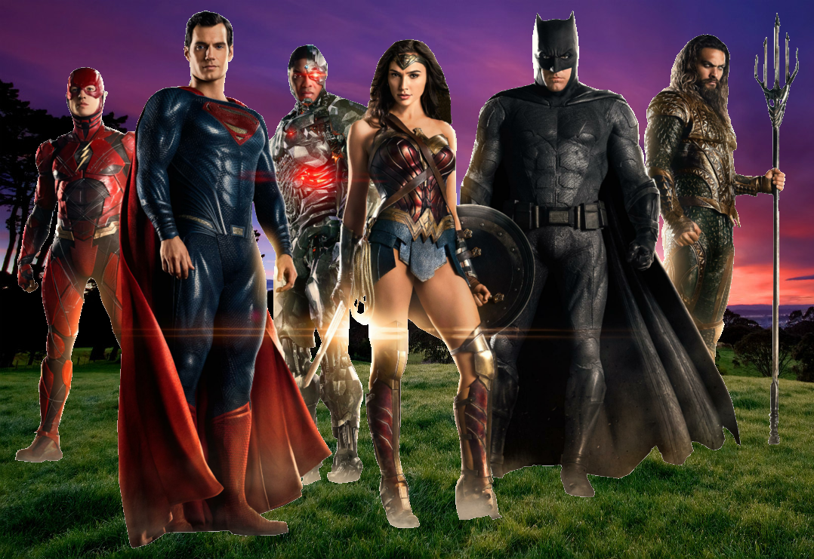

IamTCST 205
Green Screen
This function takes two images and replaces the green screen on one with the pixels of another, altering the background. Ideally, these images have very good green screens without shadows or other artifacts impeding on the green color. My test files included ones with transparent backgrounds which I colored green myself to ensure that my math was correct in my code. This one took several hours of playing around with small mistakes but is quite cool! The background image itself is mainly irrelevant, so the before picture here is just of the green screen image.
Before Picture:

After Picture:
Code:
def chromakey():
#pic1 = green screen image
file1 = pickAFile()
foreground = makePicture(file1)
#pic 2 = background image
file2 = pickAFile()
background = makePicture(file2)
for x in range(0,getWidth(foreground)):
for y in range(0,getHeight(foreground)):
px = getPixel(foreground, x, y)
origColor = getColor(px)
if distance(origColor, green) < 40.0:
p = getPixel(background, x, y)
newColor = getColor(p)
setColor(px, newColor)
show(foreground)
#writePictureTo(foreground, folder+"name.png")
return foreground
· Made with by Talanda featuring Bootstrap ·